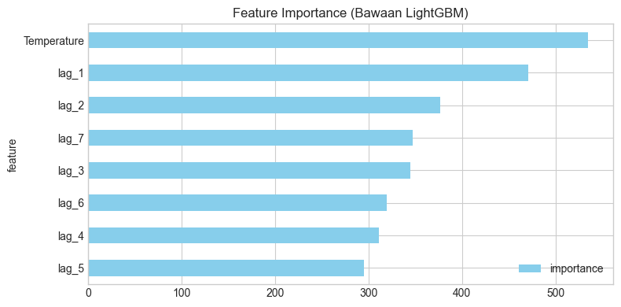
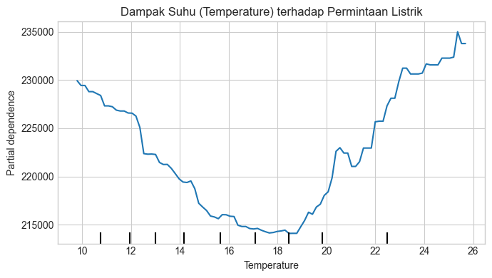
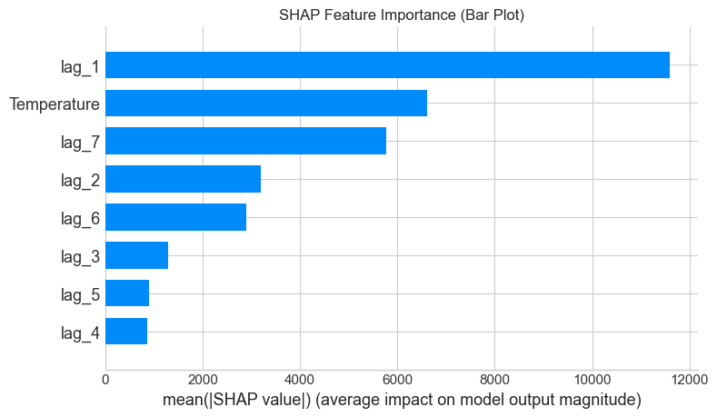
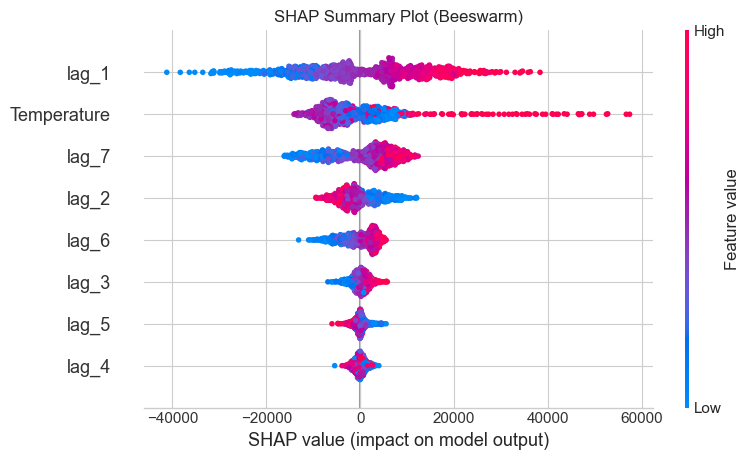

Skforecast: Prediksi Permintaan Listrik dan Analisis Explainability#
Instalasi Library#
!pip install -q skforecast lightgbm shap scikit-learn pandas matplotlib
Import Library yang Dibutuhkan#
import pandas as pd
import matplotlib.pyplot as plt
from lightgbm import LGBMRegressor
from skforecast.recursive import ForecasterRecursive
from skforecast.datasets import fetch_dataset
from sklearn.inspection import permutation_importance
from sklearn.inspection import PartialDependenceDisplay
import shap
C:\Users\Fatihul Umam\AppData\Local\Programs\Python\Python313\Lib\site-packages\tqdm\auto.py:21: TqdmWarning: IProgress not found. Please update jupyter and ipywidgets. See https://ipywidgets.readthedocs.io/en/stable/user_install.html
from .autonotebook import tqdm as notebook_tqdm
Persiapan Data (Data Preparation)#
# Mengatur tampilan plot agar lebih rapi
plt.style.use('seaborn-v0_8-whitegrid')
print("Mengunduh dan memproses data...")
# Mengunduh dataset dari skforecast
dataset = fetch_dataset(name='vic_electricity', raw=True)
# Mengubah kolom 'Time' menjadi DatetimeIndex dan mengaturnya sebagai index
dataset['Time'] = pd.to_datetime(dataset['Time'])
dataset = dataset.set_index('Time')
# Mengubah frekuensi data dari 30 menit menjadi agregasi Harian (Daily)
# Demand (Permintaan) dijumlahkan (sum), Temperature (Suhu) dirata-rata (mean)
data = dataset.resample('D').agg({'Demand': 'sum', 'Temperature': 'mean'})
# Membagi data menjadi Train (Latih) dan Test (Uji)
end_train = '2014-12-31'
data_train = data.loc[:end_train].copy()
data_test = data.loc[end_train:].copy()
print(f"Banyaknya data latih: {len(data_train)} hari")
Mengunduh dan memproses data...
╭──────────────────────────── vic_electricity ─────────────────────────────╮ │ Description: │ │ Half-hourly electricity demand for Victoria, Australia │ │ │ │ Source: │ │ O'Hara-Wild M, Hyndman R, Wang E, Godahewa R (2022).tsibbledata: Diverse │ │ Datasets for 'tsibble'. https://tsibbledata.tidyverts.org/, │ │ https://github.com/tidyverts/tsibbledata/. │ │ https://tsibbledata.tidyverts.org/reference/vic_elec.html │ │ │ │ URL: │ │ https://raw.githubusercontent.com/skforecast/skforecast- │ │ datasets/main/data/vic_electricity.csv │ │ │ │ Shape: 52608 rows x 5 columns │ ╰──────────────────────────────────────────────────────────────────────────╯
Banyaknya data latih: 1097 hari
Pelatihan Model (Training)#
print("\nMelatih model LightGBM...")
# Membuat forecaster dengan model LightGBM dan lag 7 hari
forecaster = ForecasterRecursive(
LGBMRegressor(random_state=123, verbose=-1),
lags = 7
)
# Melatih model menggunakan target (Demand) dan variabel eksogen (Temperature)
forecaster.fit(y=data_train['Demand'], exog=data_train['Temperature'])
Melatih model LightGBM...
Explainability - Ekstraksi Matriks Internal#
print("\nMengekstrak matriks latih (X_train dan y_train)...")
# Melihat bagaimana skforecast mengubah time series menjadi format tabular (baris & kolom)
X_train, y_train = forecaster.create_train_X_y(
y = data_train['Demand'],
exog = data_train['Temperature']
)
print("\nContoh 5 baris pertama dari fitur (X_train):")
print(X_train.head())
Mengekstrak matriks latih (X_train dan y_train)...
Contoh 5 baris pertama dari fitur (X_train):
lag_1 lag_2 lag_3 \
Time
2012-01-07 00:00:00+00:00 205338.714620 211066.426550 213792.376946
2012-01-08 00:00:00+00:00 200693.270298 205338.714620 211066.426550
2012-01-09 00:00:00+00:00 200061.614738 200693.270298 205338.714620
2012-01-10 00:00:00+00:00 216201.836844 200061.614738 200693.270298
2012-01-11 00:00:00+00:00 217176.907910 216201.836844 200061.614738
lag_4 lag_5 lag_6 \
Time
2012-01-07 00:00:00+00:00 258955.329422 275490.988882 227778.257304
2012-01-08 00:00:00+00:00 213792.376946 258955.329422 275490.988882
2012-01-09 00:00:00+00:00 211066.426550 213792.376946 258955.329422
2012-01-10 00:00:00+00:00 205338.714620 211066.426550 213792.376946
2012-01-11 00:00:00+00:00 200693.270298 205338.714620 211066.426550
lag_7 Temperature
Time
2012-01-07 00:00:00+00:00 82531.745918 24.098958
2012-01-08 00:00:00+00:00 227778.257304 20.223958
2012-01-09 00:00:00+00:00 275490.988882 19.161458
2012-01-10 00:00:00+00:00 258955.329422 16.042708
2012-01-11 00:00:00+00:00 213792.376946 14.815625
#Explainability - Feature Importance Bawaan Model
print("\nMenghitung Feature Importance...")
# Mengambil nilai tingkat kepentingan fitur bawaan dari LGBMRegressor
importance = forecaster.get_feature_importances()
print(importance)
# Plot Feature Importance
fig, ax = plt.subplots(figsize=(8, 4))
importance.sort_values('importance').plot.barh(x='feature', y='importance', ax=ax, color='skyblue')
ax.set_title("Feature Importance (Bawaan LightGBM)")
plt.tight_layout()
plt.show()
Menghitung Feature Importance...
feature importance
7 Temperature 535
0 lag_1 471
1 lag_2 377
6 lag_7 347
2 lag_3 345
5 lag_6 319
3 lag_4 311
4 lag_5 295

Explainability - Partial Dependence Plot (PDP)#
print("\nMembuat Partial Dependence Plot untuk Temperature...")
fig, ax = plt.subplots(figsize=(7, 4))
display = PartialDependenceDisplay.from_estimator(
estimator = forecaster.estimator,
X = X_train,
features = ['Temperature'], # Kita ingin melihat efek Suhu
ax = ax
)
ax.set_title("Dampak Suhu (Temperature) terhadap Permintaan Listrik")
plt.tight_layout()
plt.show()
Membuat Partial Dependence Plot untuk Temperature...

Explainability - SHAP Values (Analisis Mendalam)#
print("\nMenghitung SHAP Values...")
# Menggunakan TreeExplainer karena LightGBM berbasis Decision Tree
explainer = shap.TreeExplainer(forecaster.estimator)
shap_values = explainer.shap_values(X_train)
# Plot 1: SHAP Summary Bar Plot (Tingkat kepentingan rata-rata absolut)
plt.figure()
shap.summary_plot(shap_values, X_train, plot_type="bar", show=False)
plt.title("SHAP Feature Importance (Bar Plot)")
plt.tight_layout()
plt.show()
# Plot 2: SHAP Summary Plot / Beeswarm (Melihat arah dampak tiap fitur)
plt.figure()
shap.summary_plot(shap_values, X_train, show=False)
plt.title("SHAP Summary Plot (Beeswarm)")
plt.tight_layout()
plt.show()
Menghitung SHAP Values...


1. Analisis Prediksi tentang Apa?#
Berdasarkan data yang diunduh dan diproses di dalam notebook, analisis ini berfokus pada prediksi Permintaan Listrik Harian (Daily Electricity Demand) di wilayah Victoria, Australia. Model yang saya buat ditugaskan untuk meramalkan total permintaan listrik (Demand) pada suatu hari tertentu, dengan memanfaatkan pola historis permintaan listrik pada hari-hari sebelumnya beserta rata-rata suhu (Temperature) pada hari tersebut.
2. Bagaimana Bentuk Data Training-nya (Input dan Output)?#
Bentuk data training ini bisa dilihat dengan jelas pada output di langkah “3. Explainability - Ekstraksi Matriks Internal”. Library skforecast mengubah data deret waktu yang tadinya berurut memanjang menjadi bentuk matriks tabular (baris dan kolom).
Input (Fitur / X_train): Terdiri dari 8 kolom yang menjadi “petunjuk” bagi model, yaitu:
lag_1 hingga lag_7: Angka permintaan listrik dari 7 hari berturut-turut sebelum hari yang ingin diprediksi.
Temperature: Suhu rata-rata pada hari yang ingin diprediksi.
Output (Target / y_train): Nilai aktual Demand (Permintaan listrik) pada hari tersebut, yang merupakan angka yang ingin ditebak oleh model.
3. Apa Itu Lag?#
Berdasarkan tabel dari hasil ekstraksi matriks yang saya tampilkan, lag adalah nilai permintaan listrik (Demand) dari masa lalu (hari-hari sebelumnya) yang ditarik sejajar ke baris hari ini untuk dijadikan variabel input (fitur).
lag_1 adalah total permintaan listrik 1 hari sebelumnya (kemarin).
lag_2 adalah total permintaan listrik 2 hari sebelumnya.
lag_7 adalah total permintaan listrik 7 hari sebelumnya (tepat seminggu yang lalu di hari yang sama).
Dengan menggunakan lag, algoritma LightGBM yang saya latih dapat “mengingat” tren masa lalu untuk memprediksi masa depan.
4. Proses Analisis yang Dilakukan dari Kasus di Atas#
Berdasarkan urutan langkah 1 hingga 6 pada notebook yang telah saya jalankan, proses analisis (khususnya Explainability atau kemampuan model untuk dijelaskan) berjalan sebagai berikut:
Persiapan Data & Pelatihan Model: Data disiapkan menjadi agregasi harian, dibagi menjadi data latih dan data uji, kemudian model algoritma LightGBM dilatih menggunakan 7 lags dan 1 variabel suhu.
Mengekstrak Matriks: Langkah ini membuka struktur data internal untuk memvalidasi bahwa model benar-benar menerima tabel berisi lags dan suhu untuk menebak target harian.
Analisis Feature Importance Bawaan: Dari grafik batang (bar chart) biru muda, saya mengevaluasi model untuk melihat fitur apa yang paling sering digunakan. Hasilnya menunjukkan bahwa Temperature dan lag_1 adalah dua faktor yang paling mendominasi keputusan model.
Analisis Partial Dependence Plot (PDP): Grafik garis dibuat khusus untuk melihat perilaku fitur Suhu. Visualisasi menunjukkan kurva berbentuk huruf “U”. Artinya, model menyimpulkan bahwa permintaan listrik berada di titik terendah saat suhu normal (sekitar 18-20°C), tetapi akan melonjak drastis saat suhu sangat dingin (di bawah 14°C) atau sangat panas (di atas 24°C).
Analisis SHAP Values: Ini adalah tahapan evaluasi paling mendalam yang saya lakukan untuk melihat dampak positif/negatif dari setiap variabel:
Bar plot (atas): Memvalidasi ulang bahwa lag_1 dan Temperature memberikan dampak rata-rata paling besar terhadap prediksi.
Beeswarm plot (bawah): Memperlihatkan sebaran data. Titik merah melambangkan nilai fitur yang tinggi, dan biru adalah nilai rendah. Contoh pembacaannya: Pada baris lag_1, titik-titik merah mengumpul di sebelah kanan sumbu tengah. Ini membuktikan pola logis bahwa “Jika permintaan listrik kemarin tinggi (merah), maka prediksi permintaan listrik hari ini akan ikut didorong naik (bergeser ke area kanan/positif)”.